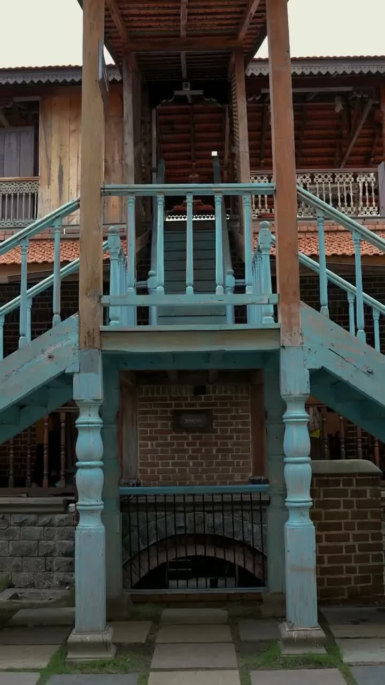
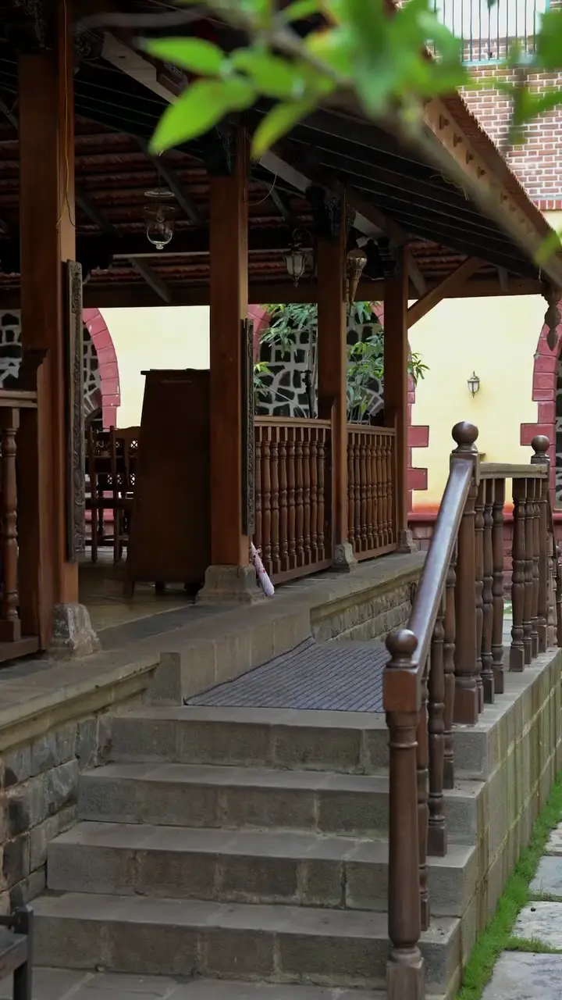

SAROLA, MAHARASHTRA — PURE VEGETARIAN
A return to
our roots.
The spirit of Swaraj.
The warmth of home.
राऊ गढी · परंपरेची चव, आपुलकीचा अनुभव.
A PLACE WITH A PURPOSE
More than a meal.
A piece of Maharashtra.
Beyond the stone ramparts, a different pace awaits. Wooden doorways, open courtyards, and the flavours of a traditional hearth. Rau Garhi brings the character of a Maratha Gadhi to the simple pleasure of sitting down together.
Discover the story behind the gates ↗Pure vegetarian.
Rooted in our region.
Served with आपुलकी.
THE RAU GARHI KITCHEN
Old recipes.
Fond memories.
From the Maharashtrian hearth to the Konkan coast, flavours that bring us back to where we belong.
PURE VEGETARIAN · RAU GARHI
The Jain menu
THE STORY OF RAU GARHI
Reviving the
spirit of Swaraj.
Not a monument to look at.
A heritage to step into.

A Gadhi once stood for more than protection. It held a community together.
That spirit became the starting point for founders Sushama Uddhavrao Shinde and Vasundhara Yogesh Deshmukh: create a place where Maratha architectural heritage and authentic hospitality could live together again.
A vision, built by hand
Over three years, visionaries and local craftsmen shaped Rau Garhi into a ground-level stone fort inspired by traditional Tatbandi ramparts and Buruj bastions. Arches, substantial wooden doorways, and stone walkways bring the language of the Gadhi into the present.
A new chapter in Sarola
In July 2026, the gates opened on the Pune–Bengaluru Highway at Sarola Gaon. Behind them, a pure vegetarian kitchen began celebrating rural Maharashtrian recipes and the warmth of a shared table.
“History isn’t just displayed on walls.
It is experienced on every plate.”
THE RAU GARHI STORY

THE DETAILS WE COME BACK TO
A doorway
to another time.
The rhythm of tiled roofs. Timber pillars and long verandahs. A courtyard that invites you to pause. The Gadhi is as much a part of your visit as what arrives at your table.
Life inside Rau Garhi ↗Our region.
Our roots.
Our pride.
YOUR TABLE IS WAITING
Make time
for togetherness.
A family lunch. An old friend. A reason to celebrate. Tell us when you’d like to visit, and we’ll help you plan it.
+91 92723 03682 ↗Requests go directly to our team on WhatsApp.
Your reservation is confirmed when we reply.
THE ROAD LEADS TO RAU GARHI
A little journey.
A warm welcome.
Sarola Gaon
Pune–Bengaluru Highway
Maharashtra, India